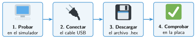

El simulador y la descarga del programa a la placa
🤔 Pienso5 min
Qué hago aquí: Piensa un momento y contesta con lo que ya sabes. No pasa nada si no lo sabes: es para empezar.
Antes de construir un puente, se prueba en el ordenador. ¿Qué ventaja tiene probar tu programa en el simulador?
📖 Leo y aprendo15 min
Qué hago aquí: Lee despacio, mira los dibujos y los ejemplos, y quédate con la idea clave del final.
El simulador es rápido y no se rompe nada . Pero el programa de verdad tiene que ir a la placa.

Para usarla sin ordenador, conecta el portapilas. El programa se queda guardado aunque la desconectes.
✏️ Hago25 min
Qué hago aquí: Haz las actividades en orden. Empieza siempre por las básicas.
Ordena los pasos del 1 al 4.
- Pulsar Descargar.
- Comprobar en la placa.
- Probar en el simulador.
- Conectar el cable USB.
¿Cómo se llama la Micro:Bit cuando la conectas al ordenador?
Pasa a la placa el contador de vueltas. Pruébalo.
Conecta el portapilas y prueba el contador sin ordenador.
Pasa a la placa la alarma de calor. Caliéntala con la mano. ¿Responde igual que en el simulador? Escribe una diferencia.
✏️ Puedes responder escribiendo, con un dibujo o un esquema, o contándolo en voz alta.
🚀 Amplío (si quieres saber más)
Qué hago aquí: ¿Has terminado? Lee la curiosidad o elige el reto. Es voluntario.
Abre un archivo .hex con el bloc de notas. Copia una línea. ¿Por qué no se parece a tus bloques?
✅ Compruebo5 min
Qué hago aquí: Contesta sin mirar la ficha y marca cómo lo llevas.